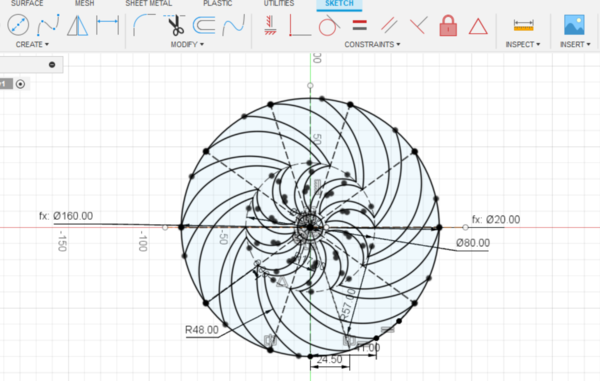
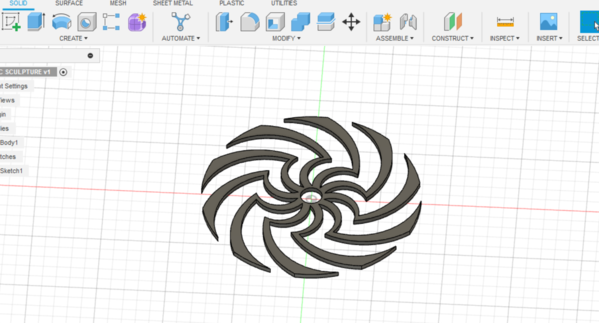
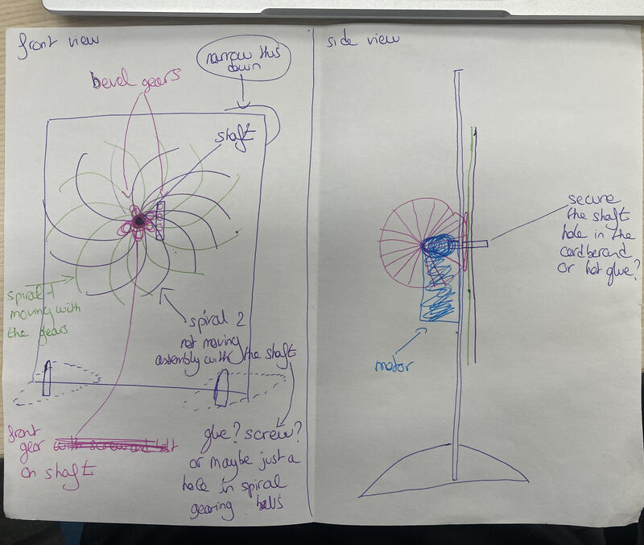
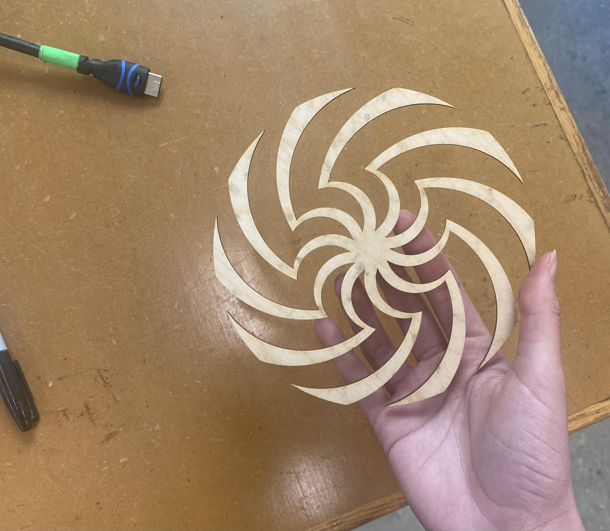
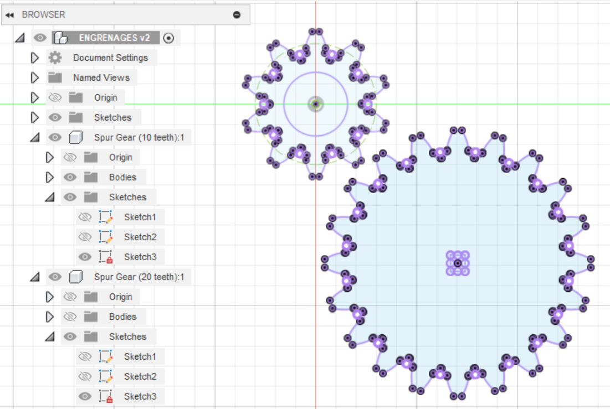
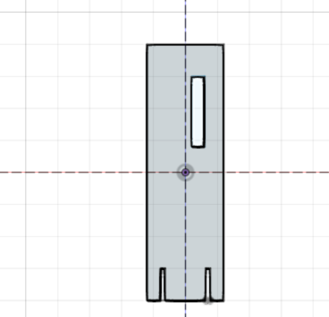
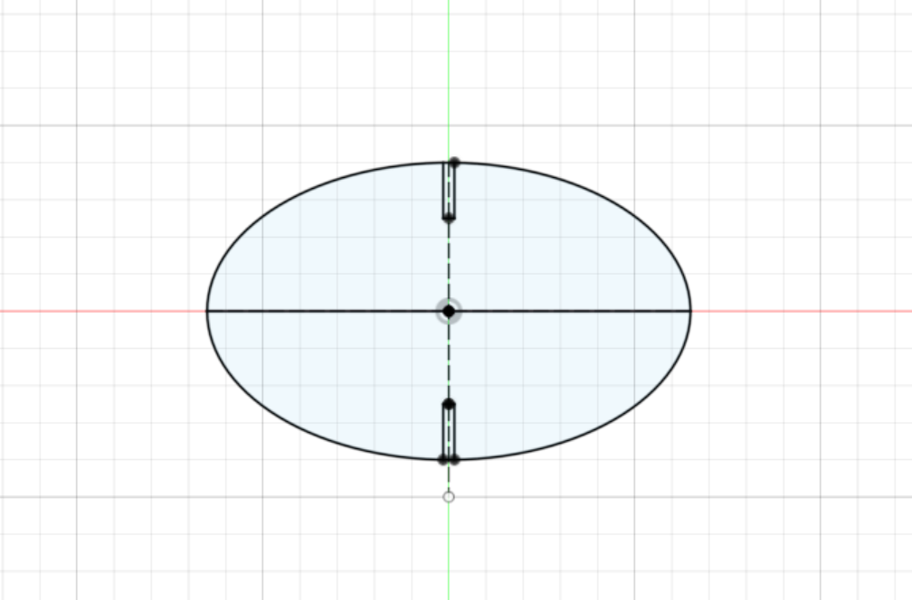
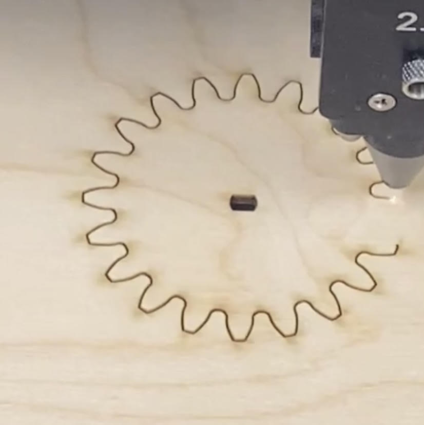

<br>
#### Week 3: Electronics and Tools
<i> Assignment:
Create a kinetic sculpture. Include circuitry to move your sculpture.
Use a multimeter to measure the voltages in your circuit. Use Ohm's law to calculate current through the circuit.
Document your work and learning. Include at least one video/gif of your sculpture. </i>
And here is a <a href="https://nathanmelenbrink.github.io/intro-dig-fab/03_tools/index.html">Link to the original assignment page</a>
<p> This week, I was really motivated to make something nice and I wanted to challenge myself a bit. I went through some ideas online and finally I chose to do a kinetic figure like this.</p>
<video width="500" height="300" controls autoplay>
<source src="inspirationkinetic.mp4" type=video/mp4>
</video>
<p>So, I first started to modelise the spiral on Fusion360. Actually, I didn't follow any tutorials and I did it by myself.</p>
<p> For the process, I first drew a circle and then I added the cut outs by using arcs. For the first half of the spiral, I used a construction circle and I also built a triangle to fit the cut out. Finally, I reproduced 10 times the cut out accross the circle with "circular pattern". For the measurements, since I didn't follow any tutorials, I just used what I thought would work.</p>

<p> Once I was done with the spiral, I realised that I had no idea how to motorise them. I spent some time thinking on how I would build my kinetic sculpture. I thought of many different things and I finally made my mind. Here is a drawing of my idea.</p>

<p> I started by printing a spiral to see if it worked out correctly.</p>

<p>To make my sculpture, the first step was to find a shaft. Then I had to find ball bearings that would fit on the shaft. I modelised gears using the add-in on Fusion360. I modelised the small gear based on the fact that I wanted it to be invisible behind the spiral (a diameter of 2/3cm) and I chose 10 teeths. Based on the bearing diameter, I modified the small gear so that the bearing would fit inside. I also modified the spiral. Since I will only be able to motorize one, I wanted to be able to spin the other one so I figured a bearing would work perfectly. I also modified the other gear so it could fit on the motor arm. I also modeled a support for my sculpture a bit like those in the Automata Tinkering Kit. I added an opening in the support for the gear connected to the motor to pass through.</p>

<p>Then, I printed everything. Here is one of the gears being laser cut. </p>

<p> Once I had everything, I added the bearings in the small gear and in one of the spiral, I glued the small gear to the spiral without a bearing and I assembled the support.</p>
<p> My next issue was figuring out a way of assembling the shaft and the support: glue? screw and bolt? make a hole in the support and slide in the shaft?</p>
<p> I was advised to use the driller to make a hole and try different sizes. Undortunately, I forgot to take a picture of this moment. I managed to drill a hole and put the shaft through the wood.</p>
<p> Then I tried to put the spirals on the shaft and spin them. Here is how it looks. </p>
<video width="600" height="400" controls autoplay>
<source src="sculpturewithoutmotor.mov" type=video/mp4>
</video>
<p> I need to motorize the sculpture now. I need to find a way to fit the motor to the back of the support without using glue if possible. I need to hold it there because the gear attached to the motor has to pass through the slot in the support to then turn the small gear and thus the spiral.What I've already noticed is that I can't glue the motor directly to the bracket because otherwise the gear will be too close. So I took three pieces of wood, glued them together and glued them to the support.</p>